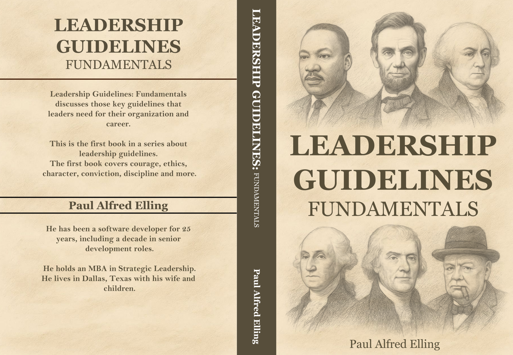

Paul Alfred Elling
Leadership
Guidelines
A Four-Part Series on the Art and Science of Leadership
Not enough education is provided about the subject of leadership — an art and science practiced across every culture and era. This series offers guidelines that anyone, in any organization, can learn and put into practice.
Part I
Fundamentals
The first volume lays the essential groundwork of leadership — what it means to prepare yourself, take ownership, and lead with courage, ethics, and discipline. Drawing on figures from Aristotle and George Washington to Michael Jordan, it shows that leadership is available to anyone who is willing to cultivate it.
- Preparation
- Taking Ownership
- Courage
- Strive for Level 5 Leadership
- Ethics
- Character
- Conviction
- Discipline
- Communication

Part II
Essential Qualities
The second volume examines the qualities that distinguish great leaders — from the willpower of Charles de Gaulle and Steve Jobs to the unifying vision of Moses and Andrew Carnegie. These are not traits you are born with; they are capacities to be developed through study and practice.
- Willpower
- Influence
- Inspiration
- Teamwork
- Conflict Resolution
- Stability
- Organization
- Vision
Part III
The Guiding Light
The third volume turns to the leader as a guiding force — exploring adaptability, diplomacy, servant leadership, and transformational change. From Mother Teresa and Volodymyr Zelensky to Genghis Khan and Angela Merkel, it shows how the most consequential leaders redirect the course of organizations and nations.
- Adaptability
- Management
- Diplomacy
- Servant Leader
- Transformational Leadership
- Perseverance
- Prudence
Part IV
Strategy
The fourth volume surveys strategic leadership through history — from King David, Pericles, and Julius Caesar through the Founding Fathers, the Civil War, and two World Wars to the modern era. Strategy is leadership in its most consequential form: decisions made under pressure that shape the fate of organizations, nations, and civilizations.
- The History of Strategy
- Before Christ — King David, Pericles, Alexander, Caesar
- Medieval Times — Charlemagne, Alfred, Henry V
- The Founding Fathers
- The Civil War — Lincoln, Lee, Grant
- World War I
- World War II — Churchill, Roosevelt, Patton, Eisenhower
- The Modern Era — Powell, Mattis